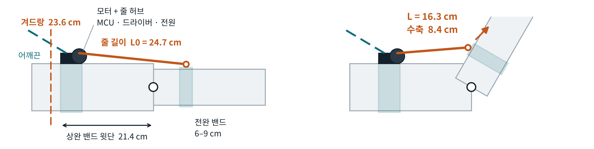
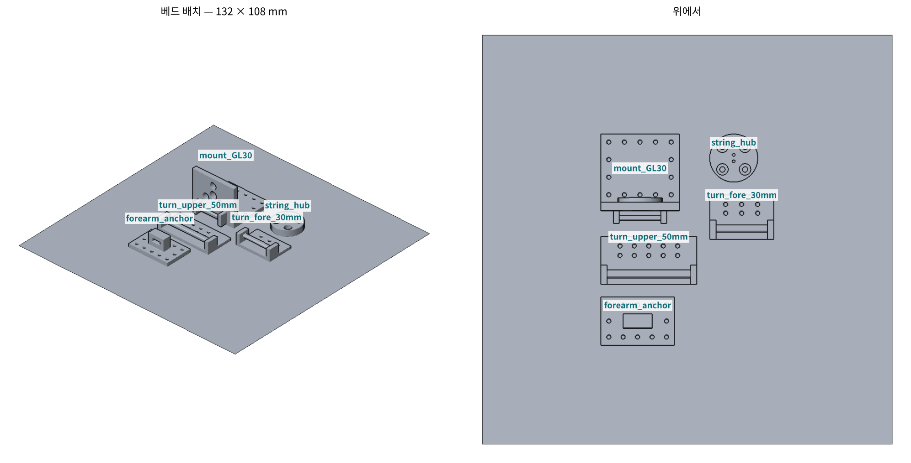

01Introduction
- 퇴원 후 가정 재활용 팔꿈치 보조기기는 충분한 보조력과 함께 착용 부담이 낮고 혼자 착용할 수 있어야 함.
- 기존 강체 외골격은 기계 관절축을 팔꿈치에 정렬해야 하고, 무게와 구조로 착용 부담이 큼.
- TSA 기반 팔꿈치 소프트 슈트 선행연구는 여럿 있으나, 인체치수·패턴·착용성 관점의 설계 근거는 부족함. 선행연구 인용 확인
0
관절축 정렬
필요 없음
필요 없음
3D
Size Korea
인체 형상 기반
인체 형상 기반
MTM
팔 곡면 맞춤
밴드 패턴
밴드 패턴
목적 — 인체치수와 착용성을 고려한 TSA 팔꿈치 굴곡 보조기기를 설계하고 착용성을 평가함
02Method Ⅰ · 설계 기준
인체치수 — 팔 단면 둘레
Size Korea 20–24세 남성 평균 3D 인체 형상에서 팔꿈치 기준 단면 둘레를 추출함.

밴드 위치 — JavaScript 시뮬레이터
굴곡각별 장력·수축량·토크·회전수를 계산해 밴드 위치를 결정함.

- 전완: 팔꿈치에서 멀수록 장력 ↓ 수축량 ↑ → 6–9 cm
- 상완: 높을수록 필요 수축률 ↓ → 겨드랑(23.6 cm) 아래 최대, 윗단 21.4 cm

03Method Ⅱ · 제작과 제어
팔 곡면에 맞춘 밴드 패턴
3D 인체 형상을 바탕으로 YUKA CAD 맞춤(MTM) 패턴 기능을 이용해 팔 곡면에 맞는 밴드 패턴을 제작함. 절차 확인
YUKA 패턴 화면 캡처 / 완성 밴드 사진

하드웨어

| 구동 | CubeMars GL30 (엔코더 내장) · 줄 간격 4 mm |
| 드라이버 | SimpleFOC Mini (DRV8313) |
| 제어기 | ESP32-C3 · 스마트폰 Wi-Fi 조작 |
| 센서 | MPU-6050 × 2 (상완 · 전완) |
| 착용 | 상완 50 mm · 전완 30 mm 밴드 + 어깨끈 |
제어 — 자세 기반 중력보상
① 감지 두 IMU로 팔의 움직임(굴곡각) 감지
② 계산 전완 무게의 설정 비율(기본 50 %)만큼 필요 장력 산출
③ 구동 토크 제어 — 착용자가 항상 이길 수 있음
④ 안전 꼬임 16회전 · 110° 이상 감기 금지 · 통신 끊김 시 정지
04Results
21.4cm
상완 밴드 윗단 (팔꿈치 기준)
6–9cm
전완 밴드 위치
8.4cm
60° 필요 수축량 재계산
≤25%
모터 정격 대비 필요 토크
보조력 설계

시제품
착용 사진 (정면 · 측면 · 60° 굴곡)
무부하 구동 확인: 1.8 V에서 650–680 rpm 안정 회전. 기기 질량 측정 예정
착용성 평가 (20대 남성 10명, 5점 척도)
항목별 평균 막대그래프
(11/19–21 평가 후 삽입)
(11/19–21 평가 후 삽입)
05Conclusion
- 인체치수 → 밴드 위치 → 맞춤 패턴 → 착용 평가로 이어지는 TSA 팔꿈치 보조기기 설계 과정을 제시함.
- 관절축 정렬 없이 줄 수축만으로 굴곡을 보조하며, 필요 토크는 모터 정격 안에 있음.
- 착용성 평가 결과 결과 예정
06Limitations & Future Work
- 20대 남성 평균 체형 하나 기준 → 다양한 체형·연령으로 확장
- IMU는 움직임만 감지 → EMG 기반 의도 감지 적용
- 구동 상태의 보조 효과·착용성 검증